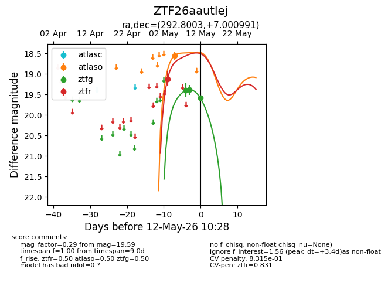
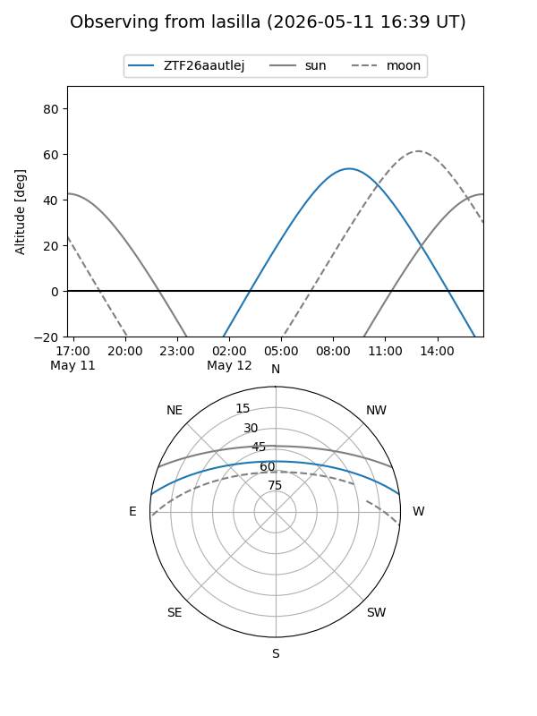
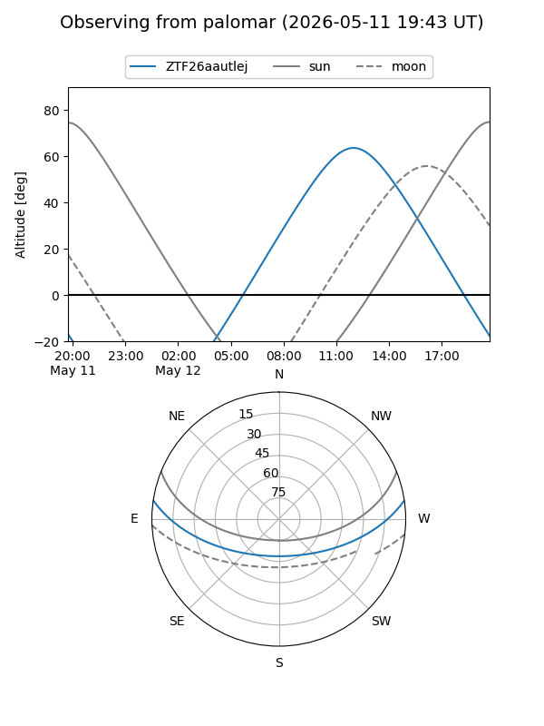
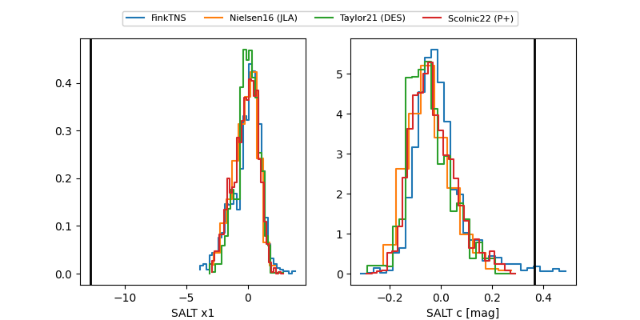

ZTF26aautlej
Target ZTF26aautlej at 2026-05-12 10:30
Aliases and brokers:
FINK: link
Lasair: link
ALeRCE: link
alt names
ZTF26aautlej (ztf,fink_ztf)
Coordinates:
equatorial (ra, dec) = 292.8003,+7.00099
equatorial (HMS+DMS) = 19:31:12.08,+07:00:03.57
galactic (l, b) = (43.7383,-5.56163)
Flags:
likely cv
Photometry:
last atlaso=18.55, ztfg=19.59, ztfr=19.12
1 atlaso, 3 ztfg, 1 ztfr detections
Lightcurve

Visibility


Additional plots
